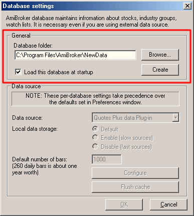
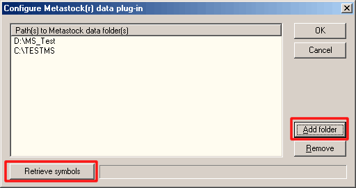
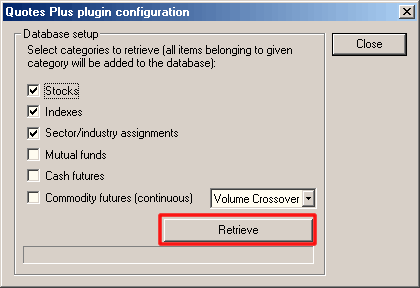

How to use AmiBroker with external data source (Quotes Plus, TC2000/TCNet/TC2005,
FastTrack, Metastock)
One of the new features introduced in AmiBroker version 3.90 is the ability
to read directly from external databases. This is achieved by means of data plug-in
DLLs that allow linking AmiBroker's database with an external source. Please note
that although you will be using an external database, you will still need an AmiBroker
database for storing additional information that is not supported by the external
source such as hand-drawn studies, assignments to groups, watch lists, composites,
and so on. You can find more information on AmiBroker database handling here.
One-time setup
To use an external data source with AmiBroker you will need to perform a one-time
setup described below:
- Run AmiBroker
- Choose File->New database
- Type a new folder name (for example: C:\Program Files\AmiBroker\NewData)
) and click Create as shown in the picture below:

- Choose appropriate entry from Data source combo:
- Quotes Plus users select "Quotes
Plus plug-in" as a Data Source and "Disable"
for Local data storage
- TC2000/TCNet users select "TC2000/TCNet
plug-in" as a Data Source and "Enable"
for Local data storage
- TC2000 Mutual Funds users select "TC2000
Mutual Funds plug-in" as a Data Source and "Enable" for Local
data storage
- TC2005 users select "TC2000/TCNet
plug-in" as a Data Source and "Enable" for Local
data storage
Note: TC2005 users may need to follow
these instructions (click here) if the TC2000 plugin
does not show up.
- FastTrack users select "FastTrack
plug-in" as a Data Source and "Disable"
for Local data storage
- Metastock users select "Metastock
plug-in" as a Data Source and "Disable"
for Local data storage
- Click on Configure button to show the plugin configuration dialog as
shown below

- Metastock plug-in only (skip this point in case of TC2000,
Quotes Plus, FastTrack):
Click on the "Add folder" button to add a Metastock database directory
as your data source (browse for Metastock MASTER file and click OK) as shown
below:

- you can add unlimited number of Metastock directories effectively overcoming
MS 4096 symbol limitation.
- Click Retrieve button - this will set up a new database with all symbols
and full names. Quotes Plus and TC2000 plug-ins will also set up your sector/industry
names and assignments, as shown below (in case of Quotes Plus plug-in):

From now on, your AmiBroker reads quotes directly from the external data source.
No need to import or update quotes anymore. All new quotes will appear
automatically without user intervention.
IMPORTANT: If there are new symbols added or old
symbols deleted from the external data source, you will need to go to File->Database
Settings->Configure and click "RETRIEVE" again to get new symbols.
Plug-in performance notes
Using AmiBroker native database gives absolutely the best performance (it takes
less than 2 milliseconds to retrieve 1000 data bars).
Metastock plug-in is also quite fast, as it can retrieve 1000 bars in about 6-7
milliseconds (including looking up for symbol in 5 different directories). In
fact AmiBroker can access Metastock data faster than Metastock itself :-)
Quotes Plus performance depends on various factors - first access can be much
slower (0.1-0.2 sec for 1000 bars) but subsequent accesses are faster (down to
5 milliseconds). FastTrack plug-in is as fast as Quotes Plus plug-in.
TC2000 is not as fast, especially if you are using data only on CD. So, it is advised
to copy your database to a hard disk for better performance. But still,
even when using CD-only data, AmiBroker can access 1000 bars from TC2000 in about
0.25 sec (first access) and 0.015 sec (subsequent accesses). Also it is advised
to enable "Local data storage" when using TC2000 plug-in because
it gives tremendous (>10 times) speedup (once you access the TC2000 data,
AmiBroker caches it in its own native database for fast retrieval).
Times are approximate and do not include one-time plug-in initialization process.
Measurements were done on fairly low-end Celeron 600-based computer with 196KB
RAM and 24x CD-ROM
In-memory caching
By default AmiBroker holds data for only the 10 most recently accessed symbols. This takes up about 320 KB (yes, kilobytes) of memory for 1000 bars
per symbol. You can enlarge "In-memory cache" (Tools->Preferences
: "Data" tab) to 100 (approx. 3.2MB additional RAM consumption)
or 1000 (approx. 32MB additional RAM consumption) or even more to get much
better performance for subsequent data access (once data is in RAM, AmiBroker
does not need to ask the plug-in again and again)